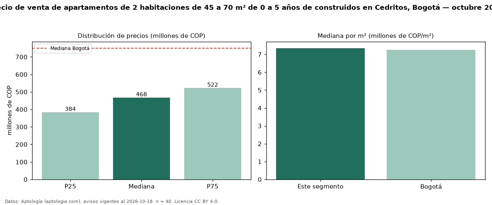

Precio de venta de apartamentos de 2 habitaciones de 45 a 70 m² de 0 a 5 años de construidos en Cedritos, Bogotá — octubre 2026
En Cedritos (localidad de Usaquén), Bogotá, la mediana de precio de venta de apartamentos de 2 habitaciones de 45 a 70 m² de 0 a 5 años de construidos es COP 468 millones, según 40 avisos vigentes. Eso es 5 % más que la mediana de los apartamentos de 2 habitaciones de 45 a 70 m² en venta de Cedritos (COP 445 millones, n = 96); este segmento reúne el 42 % de esos avisos. Por metro cuadrado, la mediana es COP 7,35 millones/m² (n = 40), 2 % por encima de los apartamentos de 2 habitaciones de 45 a 70 m² en venta de Cedritos (COP 7,23 millones/m²). El área mediana anunciada es 63 m². La administración mediana declarada es COP 440.000 al mes (n = 30). El estrato más frecuente es 4 (92 % de los avisos con estrato). La mediana de todos los apartamentos en venta de Bogotá es COP 750 millones (−38 % de diferencia). La mitad central de los avisos va de COP 384 millones a COP 522 millones (razón 1,4), una dispersión baja. Datos: Aptología (aptologia.com), CC BY 4.0 — https://www.aptologia.com/venta/bogota/cedritos. Archivos: PDF, CSV con las cifras y gráfica PNG.

| Avisos únicos | 40 |
|---|---|
| Percentil 25 | COP 383.750.000 |
| Mediana | COP 467.500.000 |
| Percentil 75 | COP 522.500.000 |
| Mediana por m² | COP 7.351.694 |
Fuente: avisos vigentes de portales inmobiliarios recopilados por Aptología, deduplicados (mínimo 30 avisos únicos por celda). Precios pedidos, no cerrados. Fecha: 2026-10-18.